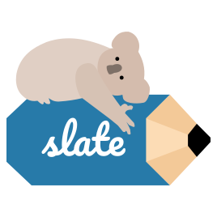

Qt for WebAssembly
morten.sorvig@qt.io
Qt for WebAssembly
Agenda
Building Applicaitons for WebAssembly
Local File Access
Networking
WebAssembly platform features
Build once, deploy everywhere*
No installation required
Security through sandboxing
Qt Support
Qt 5.12: Tech preview
Qt 5.13: Supported platform
Qt Support: The fine print
Suppored Modules: QtBase, QtDeclarative, QQuickControls2, QtCharts, QtWebSockets, QtMQTT
Not Supported: QtMultimedia, QtWebEngine
No system font support (bring your own fonts)
No accessibility/screen reader support
Building Qt Applications
1) Install Emscripten
2) Build/Install Qt for WebAssembly
3) Build Application (qmake + make)
Will produce .wasm, .js and .html files, which can be served from any web server
Wasm Binary Size
(compressed)
| Modules | gzip | brotli |
|---|---|---|
| Core Gui | 2.8MB | 2.1MB |
| Core Gui Widgets | 4.3MB | 3.2MB |
| Core Gui Widgets Quick Charts | 8.6MB | 6.3MB |
Demo: Slate
 Slate - Pixel Art EditorImage editor made with Qt Quick Controls 2
Also, full viewport
Local File Access
Sandbox prevents direct file system access
HTML has API for opening a file dialog, and starting a file download
Not Compatible with QFileDialog - New API is needed
Local File Access
Callback-based loadFile()
QWasmFile::loadFile("*.txt",
[](const QByteArray &fileContent,
const QString &fileName) {
qDebug() << "Got" << fileContent.count()
<< "bytes from" << fileName;
});
Fire-and-forget saveFile()
QByteArray content = ...;
QString fileNameHint = ...;
QWasmFile::saveFile(content, fileNameHint);
Networking
| API | Protocol | Notes |
|---|---|---|
| QNetworkAccessManager | Http | Same Origin / CORS host |
| QWebSocket | WebSocket | Any host |
| QAbstractSocket | WebSocket | Websockify forwarding host |
MQTT over WebSocket
Bonus Demo Slide